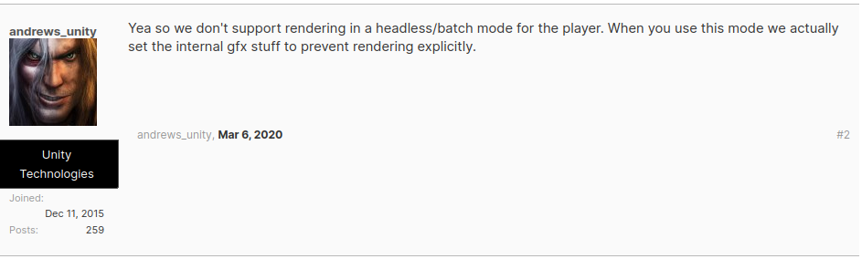

If, like me, you are trying to get your Unity executable to run in a cloud server like AWS EC2, or GCP, this guide is for you. Unity is just an example here, this should work with pretty much any graphics based executable, or also just if you want a remote desktop.
Since we're using Unity as an example, let's say that you have a compiled unity executable, which you use to render images for training ML models. Can you just run it headlessly in a cloud server with no display? Why don't we just try, we run the command..
Welcome to Ubuntu 20.04.2 LTS (GNU/Linux 5.8.0-1038-gcp x86_64)
[this is running on a cpu-only GCP instance]
daniel@34.125.185.12:~$ cd unity-executable
daniel@34.125.185.12:~/unity-executable$ ./build.x86_64
Set current directory to /home/daniel/unity-executable
Found path: /home/daniel/unity-executable/build.x86_64
... and it crashes.
First, we should always try to find the reason for the crash. In our Unity example, there's not much useful showing up in the console. Turns out a useful argument is -logfile log.txt. We can then read this log for clues, though those clues are sometimes not very explicit.
Usually the reason our executable works on our computer but not on the server is because it requires three things: 1) An X server / graphical display 2) A graphics driver with sufficiently high OpenGL version 3) A desktop environment (sometimes)
So our goal today will be to make sure we have these 3 things set up and working on our display-less server.
Note: There are of course always other ways of reaching the same goal. For example, one way is to modify the executable so that it runs without a display. In the case of Unity you could in theory run the executable headless with the -batch and -headless arguments. But.. according to the developers doing that disables the rendering. Huh.
I want to focus here on getting those 3 requirements instead, because it is quite useful in many cases.
First we need to make sure we've installed the dependencies.
sudo apt update
sudo apt install -y xorg-dev \
libglu1-mesa libglu1-mesa-dev libgl1-mesa-dev freeglut3-dev mesa-common-dev \
xvfb libxinerama1 libxcursor1 mesa-utils
Now let's create a virtual screen on display ':0' (you can put any number here, :1, :2, etc., as long as you use the same one in later steps)
Xvfb :0 -screen 0 1024x768x24 +extension GLX +render -noreset >> xsession.log 2>&1 &
Now, to run commands in this screen, just prepend that command with DISPLAY=:0 ("DISPLAY=:0 ./mycommand"). If you want everything to run in this display, you can also just add "export DISPLAY=:0" to your .bashrc, for example.
So what exactly did this do? Basically, this starts an X server session running with a virtual screen. If you could look at that screen, you would see that it is all black (there's no desktop environment yet). I'll show you how you can look at that screen in part 4.
One nice thing about having this virtual screen running is that it makes using OpenGL possible. Many graphical applications rely on OpenGL, and so this is quite important. We can check that it is indeed usable, and the available version using the glxinfo command (installed with sudo apt install mesa-utils)
[On the server, before we ran Xvfb]
$ glxinfo
Error: unable to open display
[after running Xvfb]
$ DISPLAY=:0 glxinfo | grep version
server glx version string: 1.4
client glx version string: 1.4
GLX version: 1.4
Max core profile version: 4.5
Max compat profile version: 3.1
Max GLES1 profile version: 1.1
Max GLES[23] profile version: 3.2
OpenGL core profile version string: 4.5 (Core Profile) Mesa 20.2.6
OpenGL core profile shading language version string: 4.50
OpenGL version string: 3.1 Mesa 20.2.6
OpenGL shading language version string: 1.40
OpenGL ES profile version string: OpenGL ES 3.2 Mesa 20.2.6
OpenGL ES profile shading language version string: OpenGL ES GLSL ES 3.20
GL_EXT_shader_implicit_conversions, GL_EXT_shader_integer_mix,
So now, we've made sure that we have a virtual display, and that OpenGL is usable, which is good. However, a source of many problems is the OpenGL version. Some programs require that OpenGL be at least a certain version, and will refuse to run otherwise (Unity, for example).
The issue here is that the max OpenGL version is tied to the graphics driver being used, and hardware. If you're on a GPU instance, the only way of increasing it is by updating the GPU drivers (the procedure depends on vendor - nvidia / intel). If you're on a CPU-only instance, I found that using a later version of Ubuntu (20) also set OpenGL to a higher version (high enough to run Unity), though it might also be hardware dependent. This is a tricky topic to find an answer to, your mileage may vary.
A Desktop environment (abbreviated DE) is the thing that shows you a background, windows (through a window manager), a mouse pointer, and so on. Some applications interact with the DE, and so it might be necessary to run one. It can also be useful if you want to use the server as a remote desktop.
There's several choices for DEs, popular ones include gnome (the default ubuntu one), xfce (a light DE), KDE, regolith, etc.. In this example, I'll use xfce to save on disk space, though you can easily switch to another
sudo apt install -y xfce4-session
DISPLAY=:0 startxfce4
That's it. If you could now look at the virtual display, you would see a background, icons and so on.
One way to look at our virtual screen is to stream it to another computer using a vnc remote desktop application. For this we will use x11vnc as the server (fetches the image on the virtual screen and streams it online), and realvncviewer as the client (connects to the stream from another computer, and shows it).
sudo apt install -y x11vnc x11vnc -display :0 -usepw -rfbport 5901
TODO firewall rules realvncviewer images